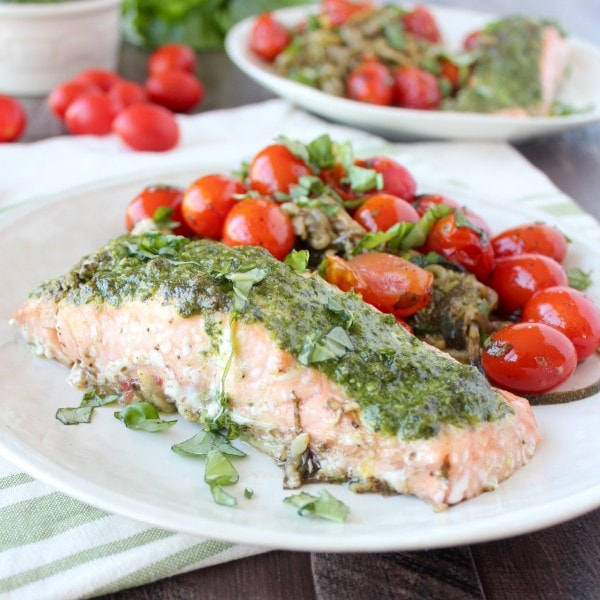

Pesto Baked Salmon

Description
Follow these easy tips for THE BEST, easy pesto baked salmon recipe that’s about to become your new favorite healthy summertime dinner.
Ingredients
- 1 large zucchini
- 4 tbsp fresh basil, spinach or kale pesto – divided (click links for recipes)
- 2 (6 oz) filets of fresh salmon (skins removed)
- 2 cups cherry tomatoes
- 4 cloves garlic
- 3 tbsp olive oil
- 1 tbsp balsamic vinegar
- ¼ tsp black pepper
- 2 tbsp fresh basil (chopped)
Steps
- Preheat the oven to 400° F.
- Spiralize the zucchini into noodles.
- Press the zucchini noodles between two paper towels to get some of the moisture out of the zoodles.
- Toss the zucchini noodles with 2 tbsp pesto.
- Divide the zucchini noodles between two foil baskets.
- Place the salmon on top of the zucchini noodles, then spread 1 tbsp. of pesto on each salmon filet.
- Add the cherry tomatoes, garlic, olive oil, balsamic vinegar, black pepper and basil to a large bowl and toss.
- Spread the cherry tomatoes around the salmon in the foil baskets.
- Place the foil baskets on a rimmed baking sheet and into the oven for 20 minutes.
- Remove from the oven and serve.